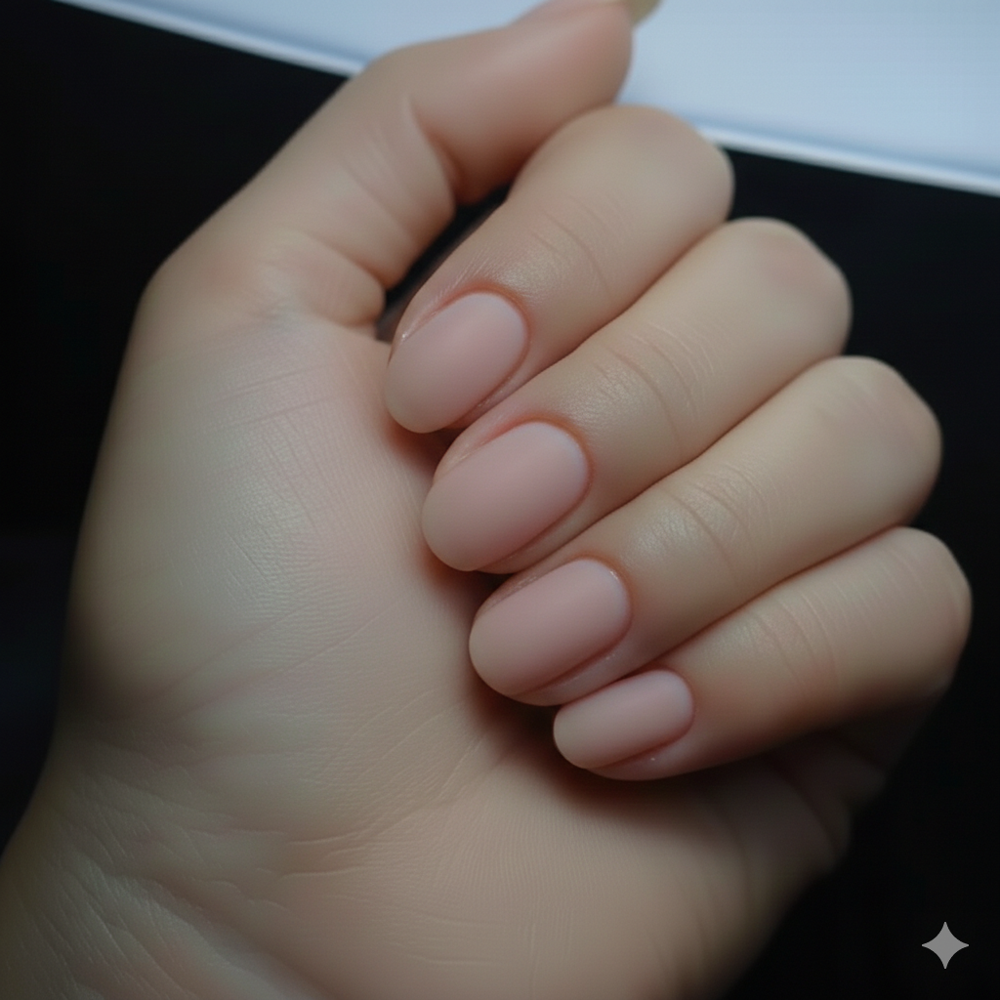

Manicuría de alta gama con diseños exclusivos y técnicas avanzadas de cuidado para destacar la belleza de tus manos.
Extensión y fortalecimiento con una técnica que combina la resistencia del acrílico y la flexibilidad del gel.
Una capa protectora sobre tu uña natural para fortalecerla, evitar quiebres y lucir un esmaltado impecable.
Extensiones ultra realistas y ligeras aplicadas con tips de gel para un acabado natural y duradero.
Esmaltado semipermanente de alta duración con brillo intenso para que tus manos luzcan perfectas por semanas.
 Después
Después

Antes¿Ya te convencí? Consultá por un turno
Los cursos son presenciales e individuales. Las fechas y horarios se coordinan según la disponibilidad de cada alumna.
Las clases se desarrollan en un lapso de 4 a 5 días, con una duración de 2 horas por clase. En caso de ser necesario, el tiempo puede extenderse para asegurar un mejor aprendizaje.
Importante: La seña congela el precio solo por el mes correspondiente. Esto significa que el curso debe comenzar y finalizar dentro del mismo mes.
Todos los cursos incluyen materiales y son personalizados según el nivel y necesidad de cada alumna.
Brindo un espacio de confianza para que puedan preguntar todo lo que necesiten. Mi objetivo es que aprendan con seguridad y se sientan preparadas para trabajar de forma profesional y segura.